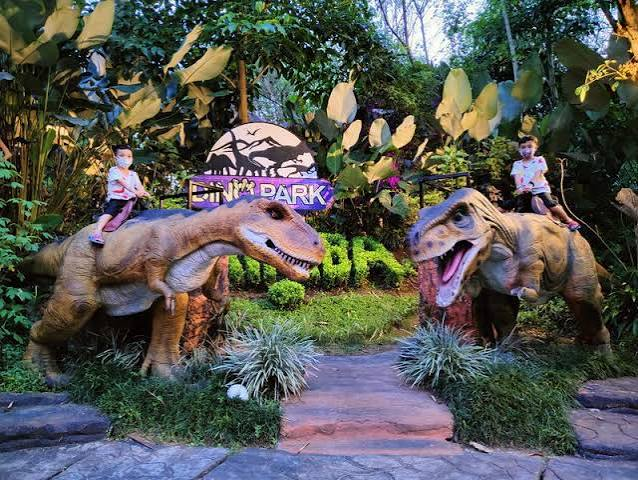

Jatim Park 3
Kota Batu, Jawa Timur

Tentang Jatim Park 3
Jatim Park 3 adalah destinasi rekreasi di Kota Batu yang menghadirkan berbagai atraksi bertema dinosaurus, hiburan, teknologi, dan pengalaman interaktif. Tempat ini menawarkan pilihan aktivitas bagi pengunjung yang ingin menikmati suasana wisata modern bersama keluarga atau teman.
Salah satu atraksi yang dikenal di kawasan ini adalah Dino Park, yang mengajak pengunjung mengenal dunia dinosaurus melalui pengalaman rekreasi bertema prasejarah.
Informasi Singkat
- Lokasi: Kota Batu, Jawa Timur
- Jenis wisata: Rekreasi dan hiburan tematik
- Daya tarik: Dino Park dan atraksi tematik lainnya
- Cocok untuk: Keluarga, pelajar, dan kelompok teman
Daya Tarik
- Dino Park dengan tema dunia dinosaurus.
- Pengalaman rekreasi yang menggabungkan hiburan dan pengetahuan.
- Atraksi tematik untuk menjelajahi berbagai pengalaman berbeda.
- Area menarik untuk dokumentasi dan berfoto.
Tips Berkunjung
- Periksa daftar atraksi yang tersedia sebelum berangkat.
- Pastikan tiket sesuai dengan atraksi yang ingin dikunjungi.
- Periksa jam operasional dan ketentuan setiap wahana.
- Rencanakan rute agar waktu kunjungan dapat digunakan dengan baik.